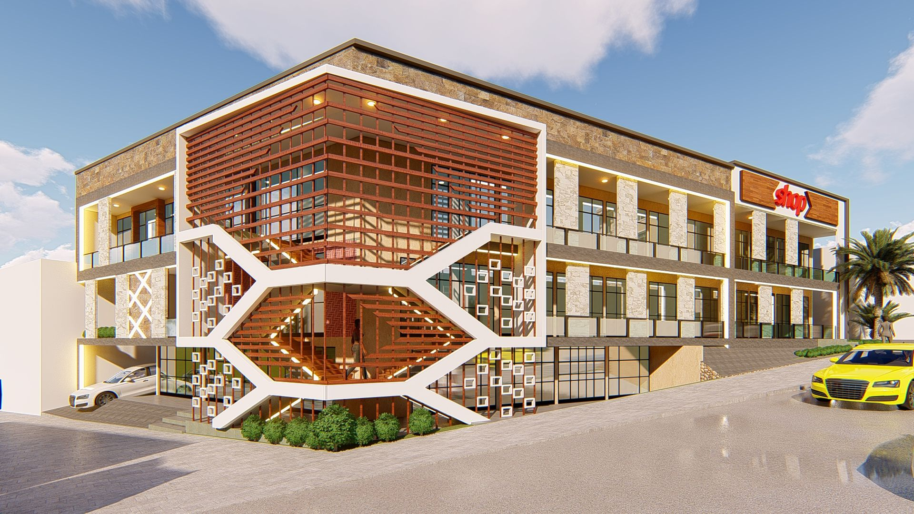
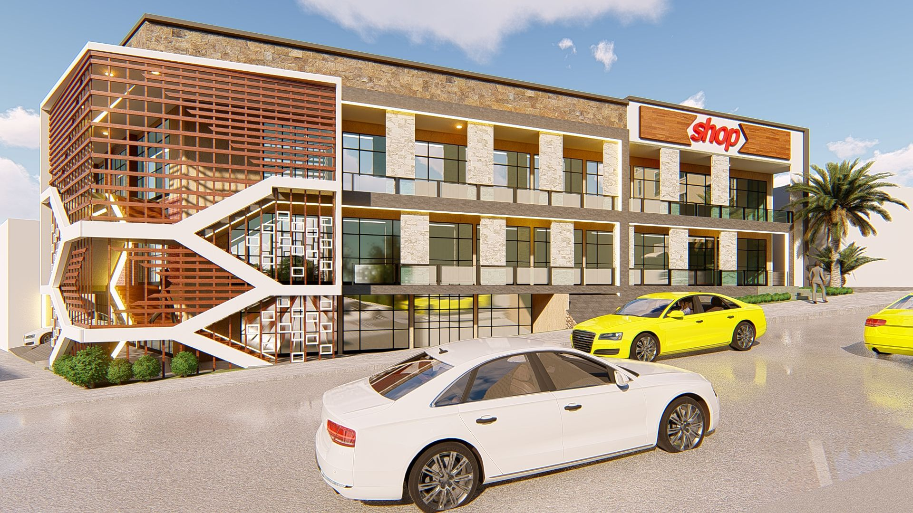
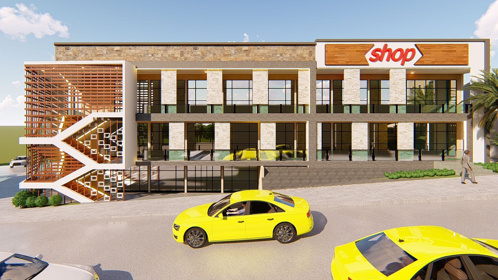
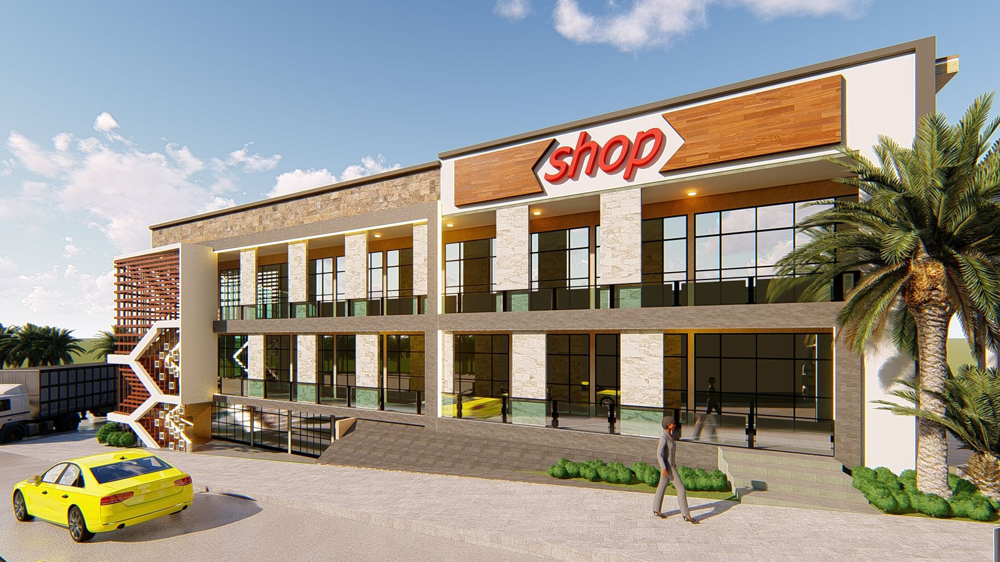
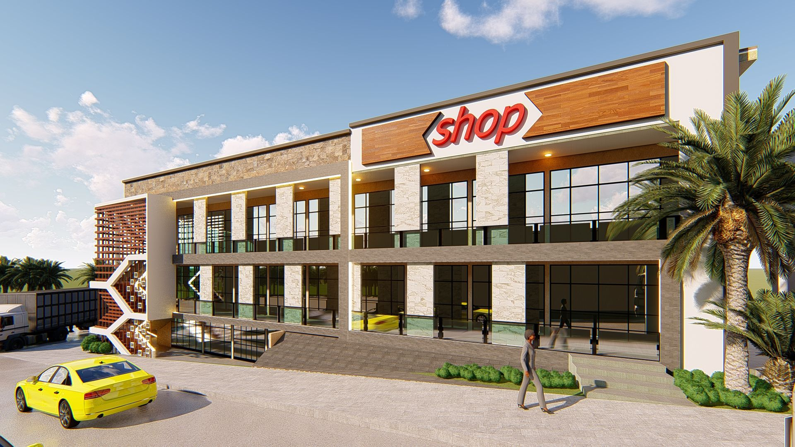
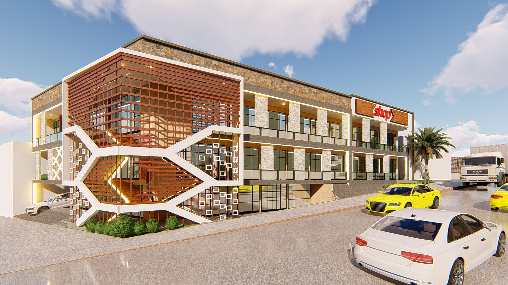
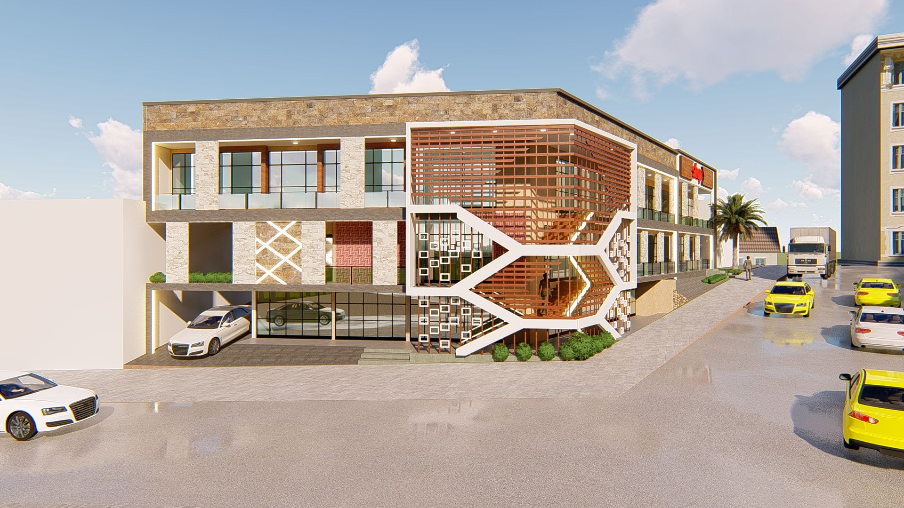
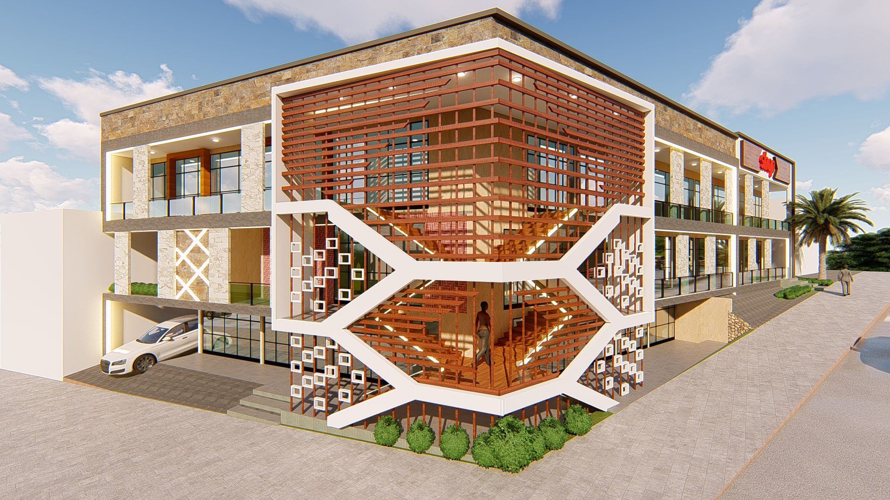
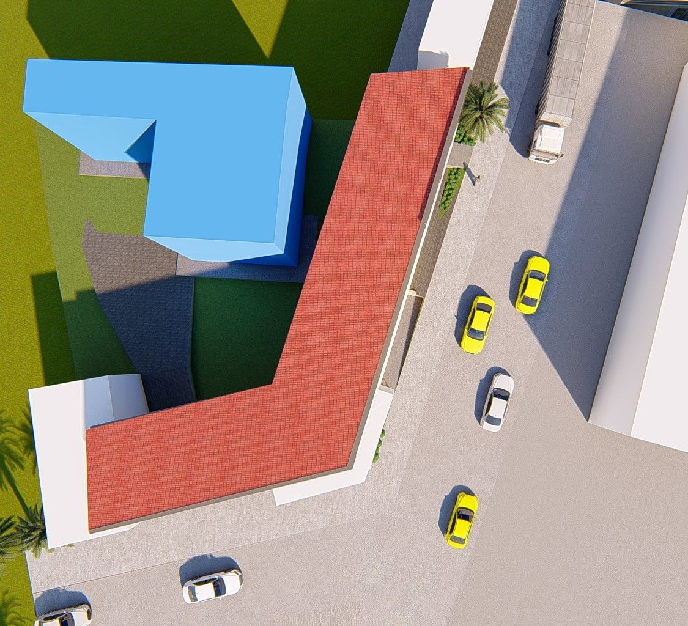

Un Espace Commercial Ancré dans son Quartier
Implantée dans le quartier animé de Biyem-Assi à Yaoundé, cette boutique illustre la capacité à concevoir des espaces commerciaux à la fois fonctionnels et esthétiquement cohérents avec leur environnement urbain. Le projet, développé sous ArchiCAD avec un levé de plans détaillé (RDC, RDJ, Étage), démontre une maîtrise complète du programme commercial.
L'intervention porte sur la réorganisation des flux internes, l'optimisation de la surface de vente et la définition d'une façade commerciale lisible et attractive. Chaque décision architecturale a été orientée par la double exigence de l'efficacité marchande et de la qualité d'usage pour les clients.








